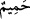
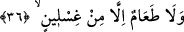

35. Bu sebeple, bugün burada onun candan bir dostu yoktur.
“Bu sebeple, bugün” kıyâmet günü “burada” bu mekânda ki orası yakalanma ve
bağlanma yeridir “onun candan dostu yoktur.” Candan dost şeklinde tercüme edilen “
/hamîm” kelimesi; gerek nesep gerek sevgi yönünden insana yakın olan, insanı
koruyan ve savunan, insanın başına bir iş geldiğinde bundan üzüntü duyan kişi demektir.
Kâfirlerin dostları ise kendilerini korur gibi görünecek ancak kendilerinden
kaçacaklardır. Nitekim bir âyet-i kerîmede buna şöyle işâret olunuyor: “Dost, dostu
sormaz.” (el-Meâric, 70/10)
Aynu’l-maânî’de “hamîm” kelimesi “kendisine kalbi yanan yakın” şeklinde tefsir
olunmuştur. Böylece kelimenin “hamîmu’l-mâ”dan türediğine işâret edilmiştir.
Kâşânî’nin tefsirine göre âyetin mânâsı; “Bu yüzden bugün burada onun –kendisi,
kendisinden kaçtığı için- candan dostu yoktur. Kendisi, kendisinden kaçtığına göre
başkaları neden ondan kaçmasın...”
Bu son âyet, kâfir hakkında zebânîlere söylenen sözlerin tamamlayıcısı niteliğindedir.
Böylece kâfirin Allah’ın rahmetinden mahrum olacağı bildirilmiş ve yakalanması için
zebânîler teşvik edilmiş olmaktadır.
36. Gıslîn’den (kanlı irinden) başka yiyeceği de yoktur.
“Gıslîn’den başka yiyeceği de yoktur.” Kamus’ta ifâde olunduğuna göre “ğıslîn”
elbise ve benzeri nesnelerin yıkanmasından meydana gelen kir demektir. Ayrıca ğıslîn
cehennemlik olan kimselerin derilerinden akan şey demektir. Kelimenin, kendi
bedenlerinden çıkan sarı renkli irin ve cerahat anlamı da vardır. Ğıslîn cehennemin
şiddetli sıcağıdır veya cehennemde bir ağacın adıdır. Buna göre âyet-i kerîmenin
mânâsı şöyledir: “Onlar için cehennemliklerin kirinden, ateşin harâretinin tazyikiyle
bedenlerinden akan irinden ve kandan başka yiyecek yoktur.”
Rivâyet olunduğuna göre bu ğıslinden bir damlası yeryüzüne düşecek olsa insanların
bütün yaşantıları bozulur ve altüst olur.
İfâde edildiğine göre cehennemin çeşitli tabakaları ve her tabakanın kendine göre
yiyeceği ve içeceği vardır. Bu âyet ile “onlar için kuru dikenden başka yemek
yoktur” (el-Ğaşiye, 88/6) âyeti arasının ne şekilde telif edileceği ilerde gelecektir.
Ğıslîn kelimesi aslında “ğısl” kökünden türemedir. Kelimenin sonundaki ya ve nun
harfleri zâiddir. Kevâşi tefsirinde ifâde olunduğuna göre “nûn” zâid değildir. Ğıslîn
cehennemde bir ağacın adıdır ve bu yiyecek cehennemliklerin yiyecekleri içerisinde en
kötü ve en iğrenç olanıdır.
Bu âyette yer alan istisnâ, yiyecek anlamına geldiği hâlde “taam” kelimesini
içeceklere de şâmil kabul edersek muttasıl olur. Nitekim “Biliniz ki Allah sizi bir